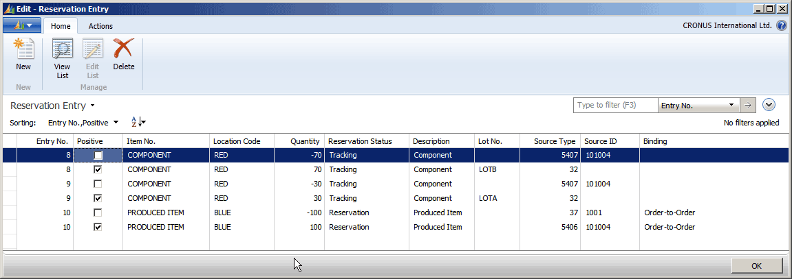
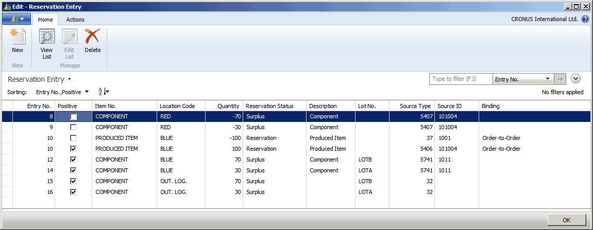
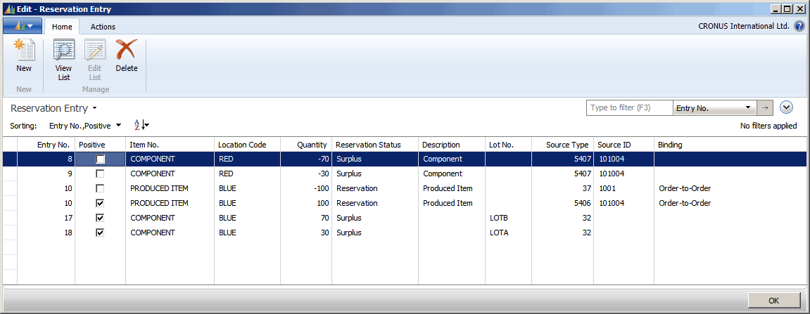
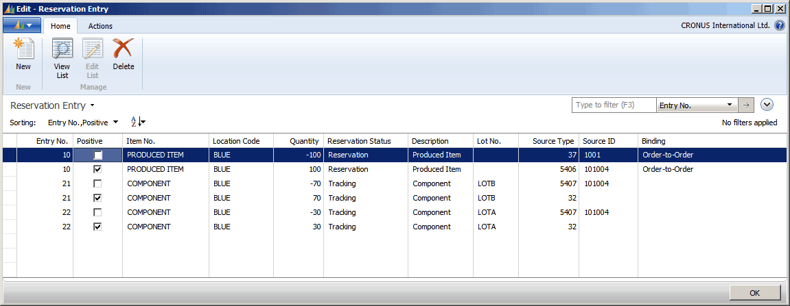

Design Details: Reservation, Order Tracking, and Action Messaging
The reservations system is comprehensive and includes the interrelated and parallel features of Order Tracking and Action Messaging.
At the core of the reservation system is the linking of a demand entry and a corresponding supply entry, either through reservation or order tracking. A reservation is a user-generated link, and an order tracking record is a system-generated link. An item quantity that is entered in the reservation system is either reserved or order tracked, but not both at the same time. How the systems handle an item depends on how the item is set up.
The reservation system interacts with the planning system by creating action messages on planning lines during planning runs. An action message can be considered an appendage to an order tracking record. Action messages, whether created dynamically in order tracking or during the planning run, provide a convenient tool for efficient supply planning.
Note
Reserved quantities are ignored by the planning system, that is, the hard link that is made between supply and demand cannot be changed through planning.
The reservations system also forms the structural foundation for the item tracking system. For more information, see Design Details: Item Tracking.
For more detailed information about how the reservation system works, see the “Reservation Entry Table” white paper on PartnerSource.
Reservation
A reservation is a firm link that connects a specific demand and a specific supply to each other. This link directly affects the subsequent inventory transaction and ensures the proper application of item entries for costing purposes. A reservation overrides the default costing method of an item. For more information, see “Design Details: Costing Methods”.
The Reservation page is accessible from all order lines of both demand and supply type. In this page, the user can specify which demand or supply entry to create a reservation link to. The reservation consists of a pair of records that share the same entry number. One record has a negative sign and points to the demand. The other record has a positive sign and points to the supply. These records are stored in the Reservation Entry table with status value Reservation. The user can view all reservations on the Reservation Entries page.
Offsetting in Reservations
Reservations are made against available item quantities. Item availability is calculated in basic terms as follows:
available quantity = inventory + scheduled receipts - gross requirements
The following table shows the details of the order network entities that are part of the availability calculation.
| Field in T27 | Source table | Table filter | Source field | |
|---|---|---|---|---|
| Inventory | Inventory | Item Ledger Entry | N/A | Quantity |
| Scheduled receipts | FP Order Receipt (Qty.) | Prod. Order Line | =Firm Planned | Remaining Qty. (Base) |
| Scheduled receipts | Rel. Order Receipt (Qty.) | Prod. Order Line | =Released | Remaining Qty. (Base) |
| Scheduled receipts | Qty. on Assembly Order | Assembly Header | =Order | Remaining Qty. (Base) |
| Scheduled receipts | Qty. on Purch. Order | Purchase Line | =Order | Outstanding Qty. (Base) |
| Scheduled receipts | Trans. Ord. Receipt (Qty.) | Transfer Line | N/A | Outstanding Quantity |
| Gross requirements | Qty. On Sales Order | Sales Line | =Order | Outstanding Qty. (Base) |
| Gross requirements | Scheduled Need (Qty.) | Prod. Order Component | <>Simulated | Remaining Qty. (Base) |
| Gross requirements | Qty. on Asm. Component | Assembly Line | =Order | Remaining Qty. (Base) |
| Gross requirements | Trans. Ord. Shipment (Qty.) | Transfer Line | N/A | Outstanding Quantity |
For more information, see Design Details: Availability in the Warehouse.
Manual Reservation
When a user intentionally creates a reservation, the user gains full ownership of and responsibility for these items. This means that the user must also manually change or cancel a reservation. Such manual changes may cause automatic modification of the involved reservations.
The following table shows when and which modifications may occur:
| User Action | System Reaction |
|---|---|
| Decreasing the reserved quantity | The related quantity fields are updated. |
| Changing date fields | The related date fields are updated. Note: If the due date on a demand is changed to precede the shipment date or due date of the supply, then the reservation is canceled. |
| Deleting the order | The reservation is canceled. |
| Changing location, bin, variant, serial number, or lot number | The reservation is canceled. |
Note
The Late Binding functionality may also change reservations without informing the user, by reshuffling nonspecific reservations of serial or lot numbers. For more information, see “Design Details: Item Tracking and Reservations”.
Automatic Reservations
The item card can be set up to always be reserved automatically from demand, such as sales orders. In that case, reservation is made against inventory, purchase orders, assembly orders, and production orders. A warning is issued if supply is insufficient.
In addition, items are automatically reserved by various planning functions to keep a demand linked to a specific supply. The order tracking entries for such planning links contain Reservation in the Reservation Status field in the Reservation Entry table. Automatic reservations are created in the following situations:
A multilevel production order where the Manufacturing Policy field of the involved parent and child items is set to Make-to-Order. The planning system creates reservations between the parent production order and the underlying production orders to ensure that they are processed together. Such a reservation binding overrides the item’s default costing and application method.
A production, assembly, or purchase order where the Reordering Policy field of the involved item is set to Order. The planning system creates reservations between the demand and the planned supply to ensure that the specific supply is created. For more information, see Order.
A production order created from a sales order with the Sales Order Planning function is linked to the sales order with an automatic reservation.
An assembly order created automatically for a sales order line to fulfill the quantity in the ($ T_37_900 Qty. to Assemble to Order $) field. This automatic reservation links the sales demand and the assembly supply so that sales order processors can customize and promise the assembly item to the customer directly. In addition, the reservation links the assembly output to the sales order line through to the shipping activity that fulfills the customer order.
In the case of supply or demand that is not allocated, the planning system automatically assigns a reservation status of type Surplus. This could result from demand that is due to forecasted quantities or user-entered planning parameters. This is legitimate surplus, which the system recognizes, and it does not give rise to action messages. Surplus could also be genuine, excess supply or demand that remains untracked. This is an indication of an imbalance in the order network, which causes the system to issue action messages. Note that an action message that suggests a change in quantity always refers to type Surplus. For more information, see the “Example: Order Tracking in Sales, Production, and Transfers” section in this topic.
Automatic reservations that are created during the planning run are handled in the following ways:
They are applied against item quantities that are part of the availability calculation, as are manual reservations. For more information, see the "Offsetting in Reservations” section in this topic.
They are included and potentially changed in subsequent planning runs, as opposed to manually reserved items.
Order Tracking
Order Tracking helps the planner maintain a valid supply plan by providing an overview of the offsetting between demand and supply in the order network. The order tracking records serve as the foundation for creating dynamic action messages and planning line suggestions during planning runs.
Note
The order tracking system offsets available stock as orders are entered into the order network. This implies that the system does not prioritize orders that may be more urgent in terms of their due date. It is therefore up to the logic of the planning system or the wisdom of the planner to rearrange these priorities in a meaningful way.
Note
Order tracking policy and the Get Action Messages function are not integrated with Jobs. That means that demand related to a job is not automatically tracked. Because it is not tracked, it could cause the use of an existing replenishment with job information to be tracked to another demand, for example, a sales order. Consequently, you may encounter the situation in which your information about available inventory is out of sync.
The Order Network
The order tracking system is based on the principle that the order network must always be in a state of balance, in which every demand that enters the system is offset by a corresponding supply and vice versa. The system provides this by identifying logical links between all demand and supply entries in the order network.
This principle implies that a change in demand results in a corresponding imbalance on the supply side of the order network,. Conversely, a change in supply results in a corresponding imbalance on the demand side of the order network. In reality, the order network is in a state of constant flux as users enter, amend, and delete orders. Order Tracking processes orders dynamically, reacting to each change at the time that it enters the system and becomes a part of the order network. As soon as new order tracking records are created, the order network is in balance, but only until the next change occurs.
To increase the transparency of calculations in the planning system, the Untracking Planning Elements page displays untracked quantities, which represent the difference in quantity between known demand and suggested supply. Each line on the page refers to the cause of the excess quantity, such as Blanket Order, Safety Stock Level, Fixed Reorder Quantity, Minimum Order Qty., Rounding, or Dampener.
Offsetting in Order Tracking
In contrast to reservations, which can only be made against available item quantities, order tracking is possible against all order network entities that are part of the net requirements calculation of the planning system. The net requirements are calculated as follows:
net requirements = gross requirements + reorder point - scheduled receipts - planned receipts - projected available balance
Note
Demand that is related to forecasts or planning parameters is not order tracked.
Example: Order Tracking in Sales, Production, and Transfers
The following scenario shows which order tracking entries are created in the Reservation Entry table as results of various order network changes.
Assume the following data for two items that are set up for order tracking.
| Item 1 | Name | “Component” |
|---|---|---|
| Availability | 100 units in RED location - 30 units of LOTA - 70 units of LOTB |
|
| Item 2 | Name | “Produced Item” |
| Production BOM | 1 qty. per of “Component” | |
| Demand | Sale for 100 units at BLUE location | |
| Supply | Released production order (generated with the Sales Order Planning function for the sale of 100 units) |
On the Manufacturing Setup page, the Components at Location field is set to RED.
The following order tracking entries exist in the Reservation Entry table based on the data in the table.

Entry Numbers 8 and 9
For the component need for LOTA and LOTB respectively, order tracking links are created from the demand in table 5407, Prod. Order Component, to the supply in table 32, Item Ledger Entry. The Reservation Status field contains Tracking to indicate that these entries are dynamic order tracking links between supply and demand.
Note
The Lot No. field is empty on the demand lines, because the lot numbers are not specified on the component lines of the released production order.
Entry Numbers 10
From the sales demand in table 37, Sales Line, an order tracking link is created to the supply in table 5406, Prod. Order Line. The Reservation Status field contains Reservation, and the Binding field contains Order-to-Order. This is because the released production order was generated specifically for the sales order and must remain linked unlike order tracking links with a reservation status of Tracking, which are created and changed dynamically. For more information, see the “Automatic Reservations” section in this topic.
At this point in the scenario, the 100 units of LOTA and LOTB are transferred to BLUE location by a transfer order.
Note
Only the transfer order shipment is posted at this point, not the receipt.
Now the following order tracking entries exist in the Reservation Entry table.

Entry Numbers 8 and 9
Order tracking entries for the two lots of the component reflecting demand in table 5407 are changed from a reservation status of Tracking to Surplus. The reason is that the supplies that they were linked to before, in table 32, have been used by the shipment of the transfer order.
Genuine surplus, as in this case, reflects excess supply or demand that remains untracked. It is an indication of imbalance in the order network, which will generate an action message by the planning system unless it is resolved dynamically.
Entry Numbers 12 to 16
Because the two lots of the component are posted on the transfer order as shipped but not received, all related positive order tracking entries are of reservation type Surplus, indicating that they are not allocated to any demands. For each lot number, one entry relates to table 5741, Transfer Line, and one entry relates to the item ledger entry at the in-transit location where the items now exist.
At this point in the scenario, the transfer order of the components from BLUE to RED location is posted as received.
Now the following order tracking entries exist in the Reservation Entry table.

The order tracking entries are now similar to the first point in the scenario, before the transfer order was posted as shipped only, except entries for the component are now of reservation status Surplus. This is because the component need is still at RED location, reflecting that the Location Code field on the production order component line contains RED as set up in the Components at Location setup field. The supply that was allocated to this demand before has been transferred to BLUE location and can now not be fully tracked unless the component need on the production order line is changed to BLUE location.
At this point in the scenario, the Location Code on the production order line is set to BLUE. In addition, on the Item Tracking Lines page, the 30 units of LOTA and the 70 units of LOTB are assigned to the production order line.
Now the following order tracking entries exist in the Reservation Entry table.

Entry Numbers 21 and 22
Since the component need has been changed to BLUE location, and the supply is available as item ledger entries at BLUE location, all order tracking entries for the two lot numbers are now fully tracked, indicated by the reservation status of Tracking.
The Lot No. field is now filled in the order tracking entry for table 5407, because the lot numbers were assigned to the production order component lines.
For more examples of order tracking entries in the Reservation Entry table, see the “Reservation Entry Table” white paper on PartnerSource (requires login).
Action Messaging
When the order tracking system detects an imbalance in the order network, it automatically creates an action message to notify the user. Action messages are system-generated calls for user action that specify the details of the imbalance and the suggestions about how to restore balance to the order network. They are displayed as planning lines on the Planning Worksheet page when you choose Get Action Messages. In addition, action messages are displayed on planning lines that are generated by the planning run to reflect the planning system’s suggestions about how to restore balance to the order network. In both cases, the suggestions are run on the order network, when you choose Carry Out Action Messages.
An action message addresses one BOM level at a time. If the user accepts the action message, this may give rise to additional action messages at the next BOM level.
The following table shows the action messages that exist.
| Action message | Description |
|---|---|
| Change Qty. | Changes the quantity on an existing supply order to cover a changed or new demand. |
| Reschedule | Reschedules the due date on an existing order. |
| Resched. & Chg. Qty. | Reschedules the due date and changes the quantity on an existing order. |
| New | Creates a new order if demand cannot be fulfilled by either of the previous action messages. |
| Cancel | Cancels an existing order. |
The order tracking system always attempts to resolve an imbalance in the existing order network. If this is not possible, it issues an action message to create a new order. Following is the prioritized list that the order tracking system uses when it determines how to restore balance. If an additional demand has entered the order network, the system seeks to order track through the following checks:
- Check for any excess supply in the existing order tracking record for this demand.
- Check for planned and scheduled receipts in order of receipt date. The latest possible date is selected.
- Check for available stock.
- Check if a supply order exists in the current order tracking record. If so, the system issues an action message of type Change to increase the order.
- Check that no supply order exists in the current order tracking record. If so, the system issues an action message of type New to create a new order.
An open demand passes through the list and offsets the available supply at each point. Any remaining demand is always covered by check 4 or check 5.
If a decrease in demand quantity occurs, the order tracking system attempts to resolve the imbalance by performing the previous checks in reverse order. This means that existing action messages could be modified or even deleted, if necessary. The order tracking system always presents the net result of its calculations to the user.
Order Tracking and Planning
When the planning system runs, it deletes all existing order tracking records and action message entries and recreates them as planning line suggestions according to supply/demand pairs and priorities. When the planning run has finished, the order network is in balance.
Planning System versus Order Tracking and Action Messaging
The following comparison shows the differences between the methods that are used by the planning system to create planning line suggestions and the methods that are used by the order tracking system to create order tracking records and action messages.
The planning system deals with the entire supply and demand pattern of a particular item, whereas order tracking deals with the order that activated it.
The planning system deals with all levels of the BOM hierarchy, whereas order tracking deals with one BOM level at a time.
The planning system establishes links between demand and supply according to the prioritized due date. Order tracking establishes links between demand and supply according to the order entry sequence.
The planning system takes planning parameters into account, whereas order tracking does not.
The planning system creates links in a user-activated batch mode when it balances demand and supply, whereas order tracking creates the links automatically and dynamically as the user enters orders.
See Also
Design Details: Central Concepts of the Planning System
Design Details: Supply Planning